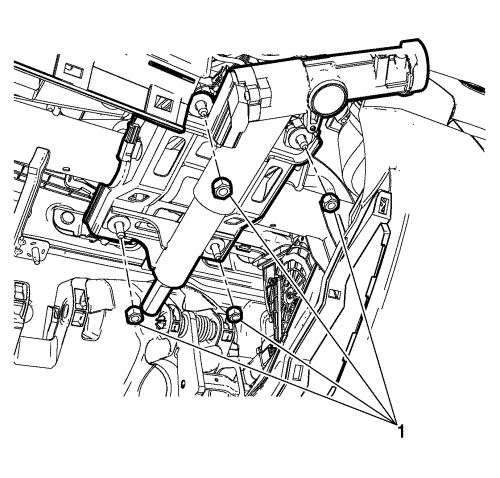
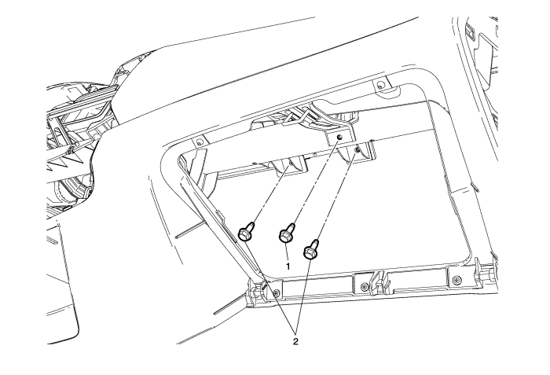
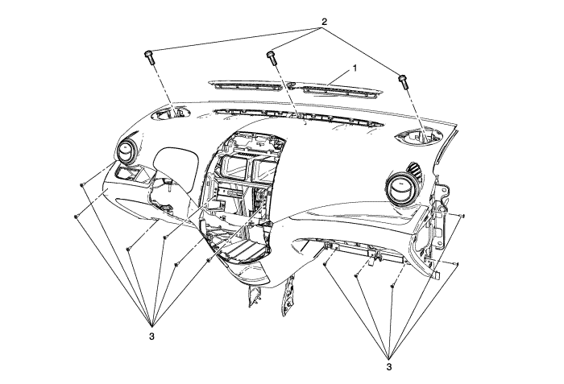
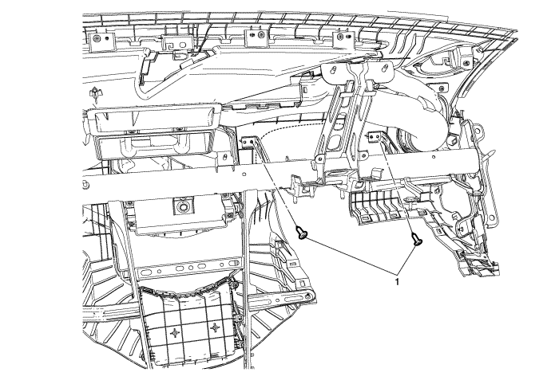

Spark
Sustitución del conjunto del panel de instrumentos
Procedimiento de desmontaje
Deshabilite el sistema SIR. Consultar
Deshabilitación y habilitación del sistema de airbag (SIR).
.
Desmonte el conjunto de la consola del piso. Consultar
Sustitución de la consola delantera del piso
.
Retirar el conjunto de la radio. Consultar
Sustitución de la radio
.
Desmonte el control de la calefacción y el aire acondicionado. Consultar
Sustitución del control del aire acondicionado y la calefacción
.
Retire la tapa de revestimiento inferior de la columna de dirección. Consultar
Sustitución de la cubierta de revestimiento inferior de la columna de dirección
.
Retire la tapa de revestimiento superior de la columna de dirección. Consultar
Sustitución de la cubierta de revestimiento inferior de la columna de dirección
.
Desmonte ambas cubiertas de revestimiento exterior del panel de instrumentos. Consultar
Sustitución de la cubierta de revestimiento exterior del panel de instrumentos
.
Desmonte el compartimento del panel de instrumentos. Consultar
Sustitución del compartimento del panel de instrumentos
.

Retire la base de relleno de la abertura de la columna de dirección. Consultar
Sustitución de la base de relleno de la abertura de la columna de dirección
.
Retire las tuercas (1) de la columna de dirección y desmonte el conjunto de la columna de dirección del soporte.

Retire los tornillos (1) del panel de instrumentos y los tornillos (2) del soporte del módulo de airbag del acompañante.

Desenchufe el conector eléctrico del módulo de airbag del acompañante.
Desmonte los dos altavoces delanteros. Consultar
Sustitución del altavoz delantero de la radio
.
Desmonte la rejilla de descongelación (1) del panel de instrumentos.
Desmonte los tornillos (2) del panel de instrumentos.
Desmonte los tornillos (3) del panel de instrumentos.

Desmonte el tornillo (1) situado en la parte posterior del panel de instrumentos del lado del conductor.
Desmonte del vehículo el conjunto del panel de instrumentos.
Procedimiento de montaje
Monte en el vehículo el conjunto del panel de instrumentos.
Atención:
Consulte
Precaución con las fijaciones
en la sección Prólogo
Monte el tornillo (1) situado en la parte posterior del panel de instrumentos del lado del conductor y apriételo a
2,5 N·m (22 lib. pulg.)
.
Monte los tornillos (3) del panel de instrumentos y apriételos a
2,5 N·m (22 lib. pulg.)
.
Monte los tornillos (2) del panel de instrumentos y apriételos a
5 N·m (44 lib. pulg.)
.
Monte la rejilla de descongelación (1) del panel de instrumentos.
Monte los dos altavoces delanteros. Consultar
Sustitución del altavoz delantero de la radio
.
Enchufe el conector eléctrico del módulo de airbag del acompañante.
Monte los tornillos (1) del panel de instrumentos y apriételos a
2,5 N·m (22 lib. pulg.)
.
Monte los tornillos (2) del soporte del módulo de airbag del acompañante y apriételos hasta
11,5 N·m (8 lib. pie)
.
Monte la columna de dirección y apriete las tuercas (1) a
25 N·m (18 lib. pie)
.
Monte la base de relleno de la abertura de la columna de dirección. Consultar
Sustitución de la base de relleno de la abertura de la columna de dirección
.
Instale el compartimento del panel de instrumentos. Consultar
Sustitución del compartimento del panel de instrumentos
.
Monte ambas cubiertas de revestimiento exterior del panel de instrumentos. Consultar
Sustitución de la cubierta de revestimiento exterior del panel de instrumentos
.
Monte la cubierta de revestimiento superior de la columna de dirección. Consultar
Sustitución de la cubierta de revestimiento inferior de la columna de dirección
.
Monte la cubierta de revestimiento inferior de la columna de dirección. Consultar
Sustitución de la cubierta de revestimiento inferior de la columna de dirección
.
Monte el control de la calefacción y el aire acondicionado. Consultar
Sustitución del control del aire acondicionado y la calefacción
.
Monte el conjunto de la radio. Consultar
Sustitución de la radio
.
Monte el conjunto de la consola del piso. Consultar
Sustitución de la consola delantera del piso
.
Activar el sistema SIR. Consultar
Deshabilitación y habilitación del sistema de airbag (SIR).
.
© Copyright Chevrolet Europe. All rights reserved